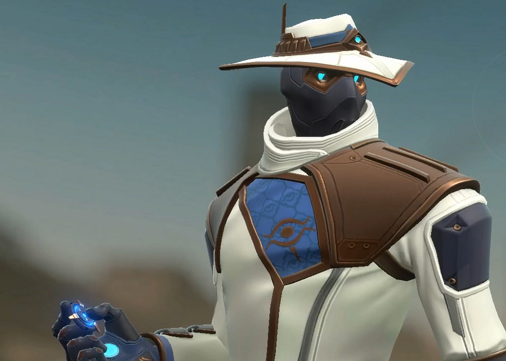
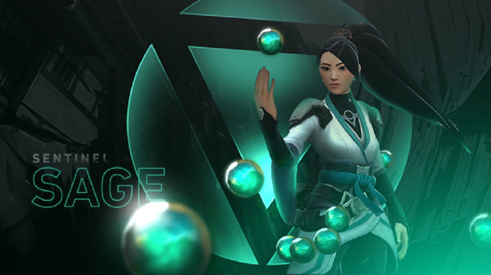

Personajes
Sova
Este experto en reconocimiento ruso, armado con su arco y flechas, permite al equipo localizar a los rivales con gran facilidad, proporcionando así una increíble ventaja en prácticamente cualquier situación.Habilidades
C-Shock bolt – Dispara un tornillo explosivo que emite un pulso de energía dañino al impactar.
Q-Owl Drone – Despliega un dron manejable que dispara dardos y revela a los objetivos alcanzados.
E-Recon Bolt – Dispara una flecha que actúa como un sonar, revelando a los enemigos mientras se mantenga en su sitio. Se puede destruir.
X-Hunter’s Fury – Dispara hasta tres explosiones de energía que atraviesan todo el mapa. Cada enemigo golpeado recibe un gran daño y queda marcado.

Cypher
Cypher es un agente marroquí especializado en controlar los movimientos de los enemigos y aprovechar sus descuidos para castigar al resto de sus compañeros con vida.Habilidades
C-Trapwire – Despliega un cable trampa entre dos paredes que atrapa y marca a los enemigos. Se puede recoger y volver a colocar.
Q-Cyber Cage – Coloca una trampa remota que ralentiza a los enemigos que la activen. Cypher puede detonar estas trampas, bien sea una a una o todas al mismo tiempo.
E-Spycam – Coloca una cámara remota que puede ser operada de manera manual para disparar dardos a los enemigos. Estos mantienen a los enemigos revelados.
X-Neural Theft – Extrae información de un enemigo muerto, revelando la posición de sus aliados restantes.

Jett
La coreana Jett es sin ninguna duda el personaje más ágil de todo el elenco de Valorant. Su alta movilidad, así como su capacidad para sorprender desde posiciones inalcanzables para otros personajes la hacen un peligro constante para sus enemigos.Habilidades
C-Cloudburst – Lanza una bola de humo que obstruye la visión cuando dondequiera que impacte.
Q-Updraft – Genera una rafaga de viento que le permite propulsarse.
E-Tailwind – Se desliza una corta distancia en la dirección en la que se está moviendo.
X-Blade Storm – Jett se arma con varios cuchillos flotantes que hacen un daño moderado y matan de un impacto en la cabeza. Al matar, recuperamos todos los cuchillos y podemos decidir si lanzarlos de uno en uno o todos a la vez.

Phoenix
Phoenix es un personaje que brilla por su estilo de combate, donde incendia el campo de batalla con luces y fuego. Estas son sus principales
Habilidades
C-Hot Hands – lanza bolas de fuego que explotan después de un tiempo o cuando impactan con el suelo. La zona daña enemigos y nos cura a nosotros.
Q-Blaze – crea una pared de fuego que bloquea la visión y daña a quien pase por esa zona
E-Curveball – lanza una llama curva que explota en una luz brillantes después de un tiempo, cegando a todos los que estén mirando en esa dirección
X-Run it Back – marca su localización, y si muere durante la duración de la habilidad o cuando está expira, resucita en la zona marcada con toda la vida

Brimstone
Segundo estadounidense del elenco. Brimstone nos recuerda al clásico comando, pudiendo solicitar ataques y potenciando a sus aliados. Sus habilidades se basan todas en ganar el control del mapa mediante brutales ataques en área, por lo que tendremos que tener mucho cuidado a la hora de enfrentarnos en grupos a él.
Habilidades
C-Incendiary – Lanza una granada incendiaria que cubre una zona en llamas.
Q-Stim Beacon – Selecciona un área en la cual los aliados reciben una mejora en la velocidad de disparo.
E-Sky Smoke – Usa tu mapa para pedir pantallas de humo en las zonas elegidas.
X-Orbital Strike – Lanza un impacto orbital devastador en una zona que genera mucho daño durante varios segundos

Sage
Sin duda, uno de los personajes más poderosos de todo Valorant. Con su gran capacidad de curación y hasta la posibilidad de revivir a un aliado caído, la agente china Sage dará es capaz de dar la vuelta a la tortilla incluso en las situaciones más peliagudas.
Habilidades
C-Slow Orb – Lanza un orbe que se expande por el suelo. Esta zona ralentiza, impide el salto y las pisadas emiten un ruido diferente al pasar sobre ella.
Q-Barrier Orb – Crea una gran pared impenetrable.
E-Healing Orb – Cura a un aliado o a sí misma durante unos segundos.
X-Resurrection – Revive a un aliado caído con su vida al máximo.
Omen
El agente más misterioso de todo Valorant. No sabemos de dónde viene ni cómo consiguió sus poderes oscuros, únicamente sabemos que se hace llamar Omen.
Habilidades
C-Paranoia – Proyecta un clon de sombra que ciega al contacto.
Q-Shadow Walk – Se teletransporta tras una corta canalización.
E-Dark Cover – Lanza un orbe que explota formando una esfera oscura. Se puede cargar para aumentar su distancia.
X-From the Shadows – Selecciona un punto en el mapa al que queramos transportarnos. En dicho lugar aparecerá una sombra que cancela nuestro transporte si es destruída. Si conseguimos transportarnos, Omen se volverá incorpóreo por unos segundos.
Breach
Breach, uno de los últimos agentes en sumarse a Valorant, ayuda a su equipo a ganar el control del mapa mediante habilidades sísmicas, fomentando un estilo de juego agresivo y a corta distancia.
Habilidades
C-Fault Line – Crea un terremoto en línea recta que desorienta a los enemigos. Puede atravesar paredes.
Q-Aftershock – Dispara una carga explosiva contra un muro que hace una gran cantidad de daño a quien esté cerca.
Flashpoint – Dispara una carga contra un muro y ciega a los enemigos al otro lado de este.
X-Rolling Thunder – Ejecuta un gran terremoto en forma de cono que levanta y aturde a todos los que se encuentren en su área.
Raze
Raze es la más reciente incorporación al plantel de agentes de Valorant. Equipada con un lanzacohetes y armada hasta arriba de granadas, Raze es el personaje más explosivo del juego.
Habilidades
C-Boom Bot – Equipa y coloca en el suelo un Boom Bot, que se mueve hacia delante en línea recta y rebota en las paredes con las que se tope. Si el Boom Bot detecta a un enemigo en frente, se fijará a él y actuará como un misil teledirigido, explotando al alcanzar al objetivo.
Q-Blast Pack – Lanza un Blast Pack que se adhiere a cualquier superficie hasta que sea detonado o el contador llegue a cero. Al detonar inflige daño en área y hace salir por los aires a los agentes que estén dentro del radio de explosión (no hace daño a Raze).
E-Paint Shells – Lanza una granada que estalla en pequeñas explosiones tras un breve retardo.
X-Showstopper – Dispara un lanzacohetes que causa una enorme explosión al impactar, infligiendo daño masivo a todo lo que esté cerca.
Viper
La elegante y letal Viper es tu campeón si lo que buscas es un estilo de juego agresivo. Oriunda de Estados Unidos, Viper hace uso de gases tóxicos para tomar ventaja en el campo de batalla, pudiendo tener bajo su control extensas zonas en las que ella tiene una absoluta ventaja. Sus habilidades dependen del «combustible», una mecánica que nos hará pensar muy bien cómo y cuándo usar nuestras habilidades
Habilidades
C-Snakebite – Dispara un proyectil que deja un charco de ácido.
Q-Poison Cloud – Lanza una bomba de gas que genera una nube de humo en una zona concreta . Se puede volver a coger la bomba y lanzarla otra vez tras un breve periodo de tiempo. Consume combustible.
E-Toxic Screen – Crea una línea de emisores de gas que pueden crear un muro tóxico a cambio de combustible.
X-Viper’s Pit – Crea una extensa nube de gas que dificulta la visibilidad. Los enemigos dentro de la nube aparecen resaltados para Viper.
Reyna
Reyna parece tener una barra de vida, ciega y en constante regeneración, siempre y cuando el jugador encuentre una baja antes de que el enfriamiento disminuya. Cada una de sus habilidades ha sido explicada con mayor profundidad por los propios desarolladores.
Habilidades
C-Cegar- Lanza un Orbe que ciega a los enemigos de los alrededores. Los enemigos pueden ver y destruir el orbe mientras están cegados.
Q-Capturador de Almas-La salud de Reyna puede regenerarse para llenarse absorbiendo vida de los orbes. Recoge los orbes de los cadáveres que matas.
E-Invulnerabilidad-Reyna puede volverse temporalmente invulnerable al daño, usando el poder del capturador de almas.
X-Juego de Mano-Aumenta temporalmente la velocidad de disparo, disminuye el tiempo de recarga y acelera el uso de tus habilidades.